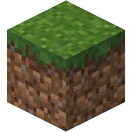

Common block found in grassy areas that can be turned into dirt and farmland and stuff.
Enderman pick them up sometimes
Green and brown
3D square shape
Stone
Underground maybe. Make stone tools with it using stick and make furnace with 8 stone in a circle. Make a wooden pickaxe and use the pickaxe on the stone.